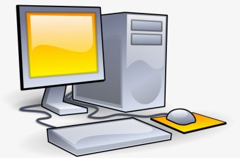

Essay On Importance of Computers | Importance of Computers For Students
Do You Know Why Computer Is Considered As An Essential & Significiant Discovery For Mankind ?
In this Page, We will be discussing all these queries & doubts in a fully documented essay format.
And If you find sommething difficult to understand,then you can search the term on your
respective Web Browser.
Importance of computer Essay: Computer has been one of the crucial things in today's modern era of science and technology. They are beneficial in various fields from educational to technical sectors. About 90% of today's works have been computerized and the percentage is rapidly increasing as humans are being more intelligent and civilized. Today's computers can perform the most difficult tasks which a human can't imagine to do by himself. Almost every sector has been affected by modernization and everyone needs the work to be finished in time efficiently. Because of these, computers have almost been part of our daily lives.
In the world of science and technology,computers are used in almost every fields and sectors across the globe. From the promenient entrepreneurs to the working professionals ,adults to students ,everyone uses computers for various purposes. Due to computers, the accomplishment of work as been significiantly increased with the rapid boost in the efficiency and accuracy. They play crucial roles in peopple's day to day activities,studying,doing research, collecting informations,completing any tasks,etc. Not only works,computers are used widely across the Globe for entertainment purposes too. One can use computer not only to study but also to enjoy and have recreation activities in a virtual world.
A computer is a modern as well a complex machine which is capable of performing various tasks in fractions of time. It not only provides efficient results but also increases the productivity. For the educational field,computers are significient for teaching and learning purposes. They are used to prepare school presentations . A computer with all the multimedia features can help students to learn better and faster than just theoritical education as there is combination of text,audio,video and animations in multimedia. A desktop computer,laptop,mobile phones, or any scientific machine capable of computing some datas and turning it to meaningful informations are termed as computers.
Use of computers in schools and colleges brings significient development in the students and teachers. Without access to computers, students have to rely only on books and teachers, which is kindof ineffective in present scenerio. Children can have access to online libraries not ony in text format for in animation and with visual effects where learning is easier and a way fore effective than traditional teaching and learning. With the internet,Students can find their problems online and learn the basics to solve them as well. Through computer and internet,students can intereact with people having same issues and learn from one another. There's a full library of informations related to everything on wikipedia where they can learn about different places,animals,facts,and everything they are curious about.
Today's computers are so automated capable of using Artificial Intelligence (AI) for decision making tasks. A student can scan his/her questions using Google Scanner and a list of similar problems with solutions arise on the screen. This is a great advancement in todays computers with the features of almost every thing a student wants to learn for himself and teach others. Students neednot to rely on their teachers to complete their tasks. Literally,a student with internet and a computer from any part of the world can learn anything he/she desires. Because of these , students become more fascinated to use modern equipments which is a good sign to help them be curious and creative.
Not only to students,Computers are beneficial to teachers as well as it increases their efficiency in teaching new informations. It helps them teach the students in a proper and interactive way. Knowledge of both teachers and students shouldn't stuck in computers only,they should also learn the access of internet.Quick communication and behavioural skills can be enhanced with computers through online interactions. Access of computers to every students in schools as well at homes can boost their productivity in learning things better . Today there is demand of skilled and creative people in the market which is not possible only by traditional methods of learning . So, Computers are very significient machines in the field of education.
FAQ'S
- How to create a FREE Website with FREE Domain & Hosting ?
- What is the Minimum Website Pages For ADSENSE Approval ?
- How to Earn Money Online in India ?
- How to Earn Money Online in Nepal ?
- Can I click my own ads in my website ?
- What is the best way to earn money online for students ?
- Can I click my AD's from others phones and earn more money ?